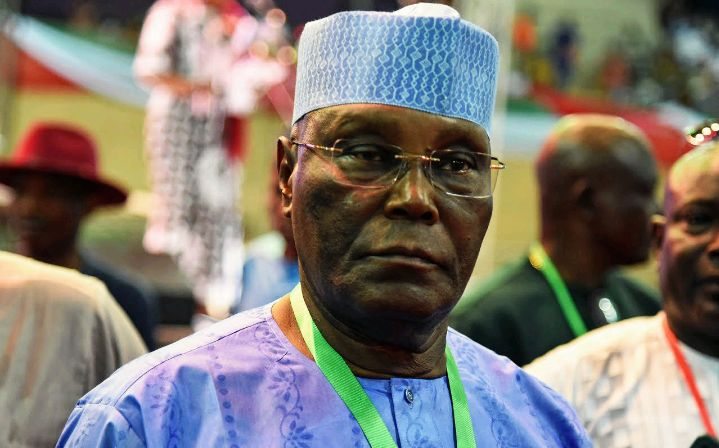

We Will Stop Tinubu By Getting 25% votes In North - Naja'atu
feb 18
A former Director in the All Progressives Congress Presidential Campaign Council, APC PCC, Naja’atu Mohammed, has vowed that, Asiwaju Bola Tinubu, the presidential candidate of the APC will be stopped from getting 25 percent votes from the Northern states.
Naja’atu stated this while addressing supporters at the People’s Democratic Party, PDP, Presidential Rally in Adamawa state on Saturday – the event was livestreamed on Arise TV and monitored online by Vanguard.
The former director of the APC PCC said her new party, the PDP will do everything to stop Tinubu in the forthcoming elections
Peter Obi’s presidential ambition dead on arrival — Tambuwal
feb 16
The Director General of the Atiku/Okowa campaign and Governor of Sokoto State, Alhaji Aminu Tambuwal has described the Presidential ambition of the Labour Party Candidate, Mr Peter Obi as dead on arrival
Tambuwal said this at the grand finale of the PDP’s presidential campaign rally held in Yola, Adamawa.

Naira scarcity: Atiku, Obi hypocrites — Remi Omowaye
feb 14
Both presidential candidates of the Peoples Democratic Party, PDP, Alhaji Atiku Abubakar and of the Labour Party, Peter Obi have been described as hypocrites for supporting the naira redesign policy of the federal government.
The spokesperson of the Tinubu-Shettima presidential campaign committee in Osun state, Engineer Remi Omowaye disclosed this in an interview with Sunday Vanguard in Osogbo.
“For anyone to support that policy on the excuse of vote buying amounts to speaking from both sides of the mouth. Peter Obi’s team even yesterday urged FG not to extend the deadline in the face of a Supreme Court order, yet, the same team talked about rule of law and love for the masses.
“If their target is our campaign team, we still have masses thronging to everywhere our candidate, Bola Tinubu goes, the crowd in Oyo state on Thursday was massive ditto for Borno State.
“Both Atiku and Obi should consider the plights of the common man who is at the receiving end of the policy. Who queue up in banks for several our and go home with nothing. Who wants to pay for the hospital bill and his efforts end in vain? The common man is our major concern, he is the reason we are against the policy implementation”, he added.
.
I’ll run govt of accountability, Tinubu tells Borno APC supporterss
Feb 14
Thousands of supporters of the ruling All Progressives Congress, APC, on Saturday, stormed Maiduguri, the Borno state capital to attend a rally in support of its presidential candidate, Asiwaju Bola Ahmed Tinubu, and his running mate, Senator Kashim Shettima, a former governor of the state (2011 to 2019).
Tinubu and his team of the Presidential Campaign Council, PCC, led by the National Chairman of the APC, Senator Abdullahi Adamu, and the governor of Jigawa state, Alhaji Abubakar Badaru, who represented the Director General of the Campaign Team, Governor Simon Lalong, were at the Shehu of Borno’s palace as a first point of call.
His Eminence, Dr Abubakar Garbai Ibn Umar El-Kanemi, in his speech, thanked Tinubu and his entourage for the visit and prayed for smooth, credible, peaceful and successful campaigns and the subsequent election.
.
Chelsea continue poor run as Everton move out of relegation zone
Feb 14
Southampton’s English midfielder James Ward-Prowse (C) controls the ball during the English Premier League football match between Chelsea and Southampton at Stamford Bridge in London on February 18, 2023. (Photo by Glyn KIRK / AFP) /
Under-fire Chelsea boss, Graham Potter, suffered another blow as bottom of the table Southampton won 1-0 at Stamford Bridge.
James Ward-Prowse scored his 17th Premier League free-kick — one behind David Beckham’s record in the competition — to give Southampton the lead in first half stoppage-time.
Stuart Armstrong was fouled on the edge of the area and with Saints fans chanting Ward-Prowse’s name, the midfielder curled a superb set-piece past Kepa Arrizabalaga.
Chelsea were booed off at full-time after a result that left them languishing in 10th place, with just two wins in their last 14 games in all competitions and none in their last five.
.
Medvedev breezes into Rotterdam final, back into world top 10
Feb 10
Russia’s Daniil Medvedev reacts after winning the semi-final match of ABN AMRO Open tennis tournament against Bulgaria’s Grigor Dimitrov at Ahoy in Rotterdam, on February 18, 2023. (Photo by Sander Koning / ANP / AFP) / Netherlands OUT / NETHERLANDS OUT
Daniil Medvedev outclassed Grigor Dimitrov in straight sets on Saturday to reach the Rotterdam ATP final and ensure a return to the world’s top 10.
Russian player Medvedev, seeded sixth, won 6-1, 6-2 in just 82 minutes, converting six of 13 break points to reach his first final since claiming the title in Vienna last October.
“It was an amazing match. The score looks easy, but the match was not. I felt physically like I was playing five sets,” said former world number one Medvedev.
In his 28th career final on Sunday, he will face either Italy’s 14th-ranked Jannik Sinner or Dutch wild card Tallon Griekspoor.
Related News
Medvedev, Sabalenka power into Adelaide semi-finals
Medvedev ignores politics to concentrate on Australian Open preparations
US Open: Medvedev into next round after comfortable win against Kozlov
“It would be amazing to win here,” said Medvedev, a 15-time champion on the tour.
“Every time I come here, everywhere there are photos of the winners and their names.
“I don’t remember who won it first time, but then Arthur Ashe won it, then others like McEnroe, Borg, Edberg, and I’m like ‘Well, that tournament has a history for sure’. To add my name there would be amazing.”
.